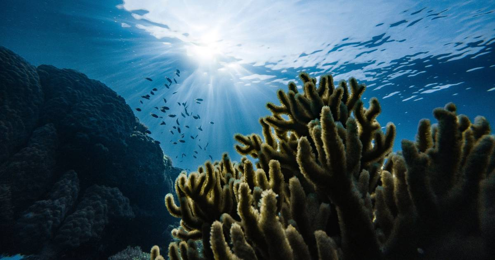

Sobre a CleanOcean
A CleanOcean é uma empresa criada para conscientizar e informar as pessoas sobre os impactos do descarte incorreto de resíduos nos mares. Todos os dias, toneladas de lixo chegam aos oceanos, prejudicando a vida marinha, contaminando os ecossistemas e afetando a qualidade de vida de toda a sociedade.
Acreditamos que pequenas atitudes geram grandes mudanças. Aqui você encontra informações sobre a poluição dos mares, suas consequências e maneiras simples de ajudar a preservar os oceanos.
Conheça o site
Um futuro brilhante que podemos construir está em nossas mãos!
